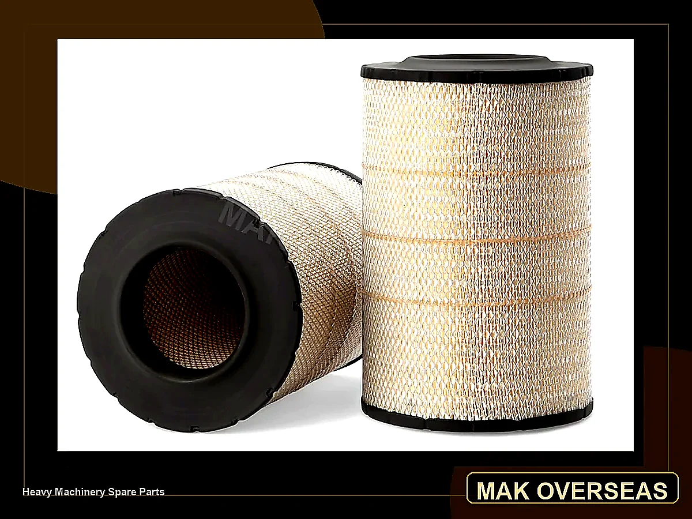

Back to MAK Filters
Tata & Ashok Leyland Filters
Fleetguard and Luman-style filter references for Tata, Ashok Leyland, Tata Ultra and related truck applications.

Use search for references like AF26485, AF26125, LF16238, FS19657, HF35470 and Tata Ultra applications.